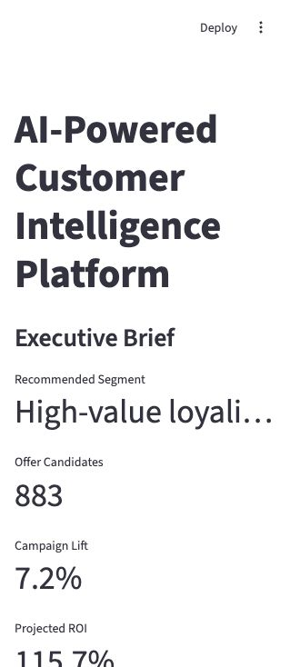
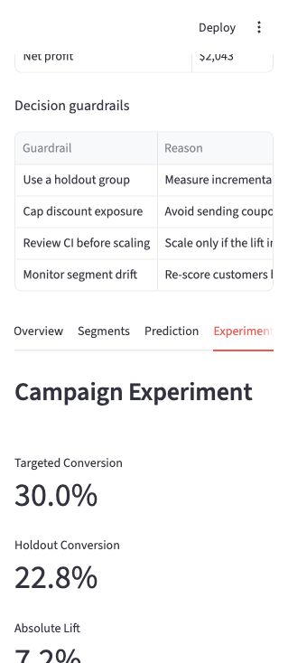
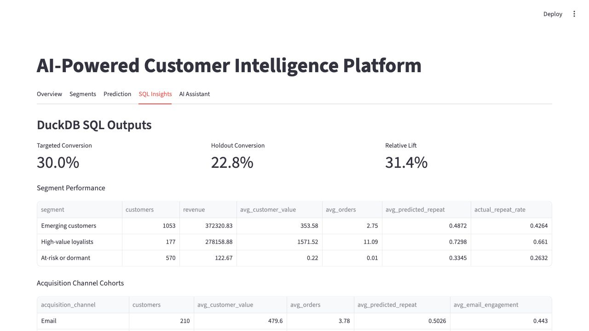

Data Analyst / Data Scientist
Changxin Shi
I turn customer, product, and campaign data into practical decisions through SQL analytics, machine learning, experimentation, and executive-ready storytelling.
Skills
Technical range for analyst and data scientist roles.
Education
Analytics training with finance, economics, and math grounding.
Work Experience
Applied analytics across operations, product, finance, and healthcare.
Experience spans KPI reporting, merchant segmentation, library operations analytics, recommendation experiments, financial modeling, portfolio analysis, and healthcare market sizing.
Project Experience
Experiments, causal impact, machine learning, and ROI analysis.
Dashboard Evidence
Decision surfaces, not just model outputs.



Leadership
Ownership, stakeholder communication, and team execution.
Leadership experience focused on student career outcomes, recruiter relationships, university-industry partnerships, and company-sponsored innovation programs.